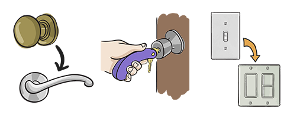
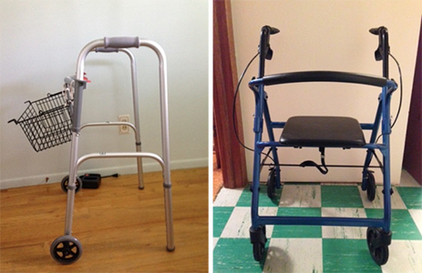

Module: Activities of Daily Living
Janet L. Poole, PhD, OTR/L
Resources
Tools and adaptive gadgets to help with scleroderma
Identify activities you’d like to do more easily and strategize with this printout.
Printout PDFActivity plan to improve ease in performing daily tasks
Identify activities you’d like to do more easily and strategize with this printout.
Printout PDFMobility
- If it is difficult to turn doorknobs, remove them and replace with lever handles.
- Remove loose rugs, scatter rugs, and mats that can slip and cause falls.
- If it is difficult to grip keys, check locksmiths and catalogues for devices that make it easier to hold and turn keys.
- Replace light switches with rocker-arm types. 
- If you have pulmonary problems and experience fatigue such that you cannot walk more than a block, think about using a walker with wheels, which can also support your arms. Baskets can also be attached to walkers so you can carry objects. Some walkers also have seats so you can sit down to rest.
- Request a handicapped parking designation on your license plate or sticker from the Department of Motor Vehicles. Your doctor will need to complete part of the form and return it to them.
- Use lightweight luggage on wheels; consider using a backpack on wheels, especially if you are a student. 
See resource on “Tools and adaptive gadgets” to make life easier and relieve your scleroderma symptoms.